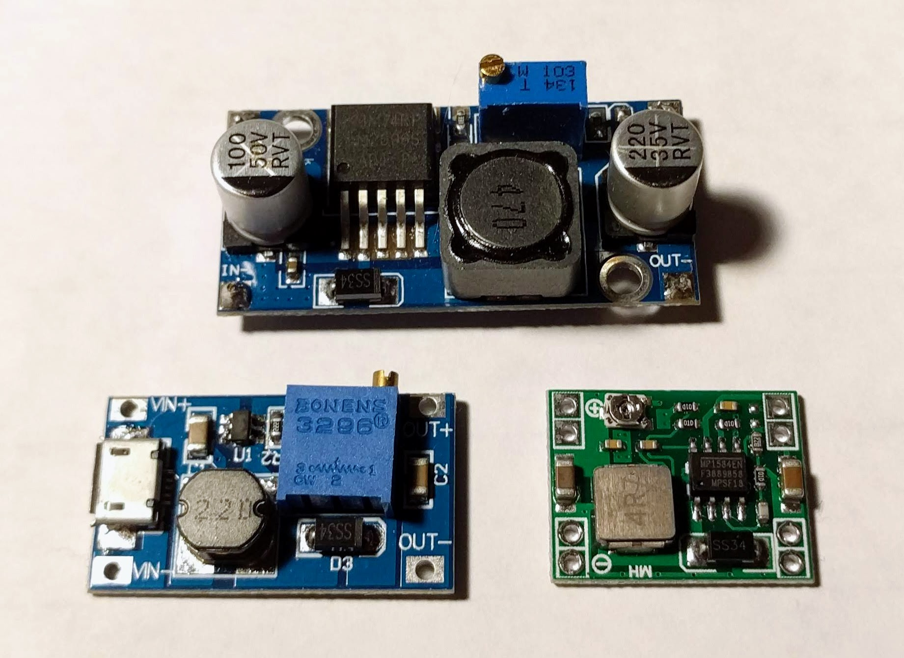

Predict a reading before touching the board
Use two voltage dividers to see how a meter alters a circuit. Then read a real voltage regulator datasheet and decide which numbers matter on the bench.
Build two dividers
Watch on YouTube · Voltage divider tutorial · Afrotechmods
Predict the midpoint voltage before watching the example. Then repeat your measurement with the extra load connected.
Use an isolated 5 V source, a breadboard, a DMM, two 10 kΩ resistors and two 1 MΩ resistors. Check your meter’s input impedance in DC volts mode, including any low-impedance mode or range exception. Measure each resistor with the power off and before inserting it.
Predict. Connect one 10 kΩ resistor from 5 V to the output and another from output to ground. Build a second divider using the two 1 MΩ resistors. Calculate each unloaded output with your actual supply voltage, and calculate how your meter changes it using T24.
Measure. Measure output to ground on both dividers with the same DMM DC-voltage setting. With exact resistors, a 5.00 V supply and a 10 MΩ meter, expect about 2.499 V and 2.381 V respectively. Use your actual meter resolution when comparing.
Add a real load. With power off, clip a spare 10 kΩ resistor from the 10 kΩ divider’s output to ground. The bottom leg becomes about 5 kΩ, so expect about 1.67 V after power returns. Remove the clip and verify the original reading returns.
Follow T04 for divider and Thévenin calculations, and T24 for probe loading and how to compare the result with meter accuracy.
Read a regulator like a service technician

Photo by Matthew Berardi. Original photo · CC BY-SA 4.0.

Open the 3.3 V TLV755P variant’s datasheet from TI. Copy the package pinout for one orderable variant, the input operating range, EN logic thresholds, minimum effective output capacitance, and dropout at the specified load for that package. On your sketch, mark IN, OUT, EN and GND and write where you would place the meter probes. TI TLV755P product page and datasheet.
Suppose IN reads 5.00 V, EN reads 0.04 V and OUT reads 0.01 V. Check EN’s low threshold first. Then find what drives EN. Write how your conclusion would change if EN were valid high and the upstream supply remained steady under load. Read about EN and power-good in T27.